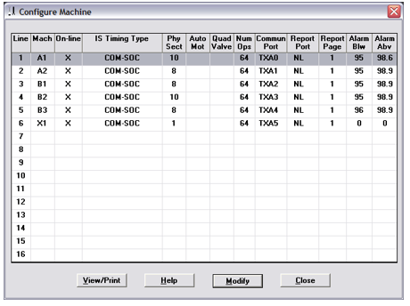
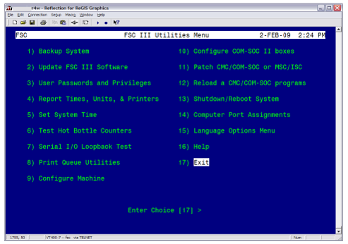

Performing a Loopback Test on the FSC
Purpose
This document describes the method to test the serial communications of COM-SOC I machines connected to the FSC by way of a Serial Distribution Panel.
Application
- This work instruction applies to all Space Plants that has FSC and Space IS Machines. This procedure helps to mitigate a problem with TCP/IP communication indicated when frequent COM-SOC II error messages occur during automatic or manual Saves from the sections (not MOC Save).
- If the FSC shares the server with the PIC application (called a Combo system), this procedure should not be necessary because it is part of every upgrade. Consult the personnel responsible for the PIC to determine when the procedure was last performed.
Procedure
- In order to improve perform a loopback test on the FSC, follow these steps:
- To perform a loop-back test, first log on to the FSC, either directly on the terminal connected to the FSC server, or by a program like Telnet or Reflections on a computer connected to the same network as the FSC.
- Determine which machine you want to test. This can be done by
- Logging on to the FSC with the MOC program.
- From the main screen, click on Utilities at the top, and click on Configure Machine.
- From the Configure Machine screen, look at the Communications Port for the
machine that you are testing. For this example, we are testing B3,
which is on communications port TXA4. This port is the Terminal
Block TB5 in the Serial Distribution Panel. 
- Connect the transmit wires and receive wires at various locations in the
communication link between the DCMC and the FSC.

- Now return to the FSC menu. From the main menu, select 4)
Utilities.

- Now select 7) Serial I/O Loopback Test. Enter the
FSC password when prompted 
- Type in the name of the communication port that you want to test.

- The program will ask for confirmation. Type ‘y’ for yes, and hit Enter.
- If the communications are good, it will display: abcdefghijklmnopqrstuvwSpace0123456789
- If the communications fail, it will display: Device timeout. Loopback failed.
Required Training
Before performing this work instruction, applicable personnel must be trained by an authorized trainer on the required training contents listed in this document.
Required items
Password to the SYSTEM account.
Definitions
- FSC
- Forming Supervising Computer – The server computer that connects to the Space Forming Machines
References
Document Classification
- Asset Protection and Stability
- Organization and Training
Collaboration
|
Country Group |
Role |
Name |
|
Americas North |
Forming Electronics Specialist |
Dan Knuckles |
|
Europe |
Forming Electronics Leader |
Remko Beckers |
|
Central Europe |
Regional Leader Forming Electronics |
Ruud Bormans |
|
France - Spain |
Jean-Pierre Locato |
Jean-Pierre Locato |
|
Latin America |
IS Machine Leader |
Miguel Morales |
|
Engineering - Forming |
Associate Engineer |
Jose Gonzalez |
|
Global |
Global Forming Electronics Leader |
Franklin Barrios |
Revision History
| 2009-02-03 |
Originally Released as Process Control SOP-09-002-B |
| 2014-07-28 |
Revision SOP-09-002-B Released |
| 2022-05-09 |
Approved by Franklin Barrios, Global Leader FES Network. Moved to GMF Site as FES-03-103 |